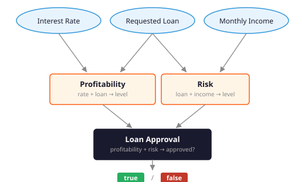
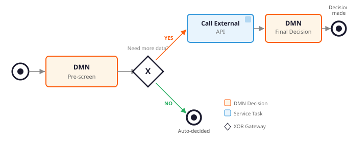
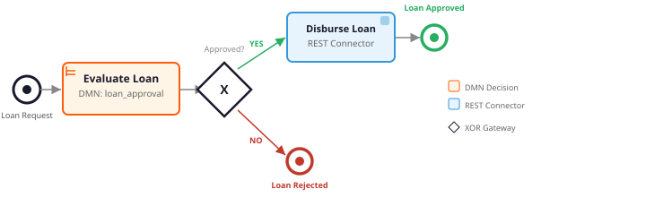

Rules Standardization • Orchestration • Testing • Deployment
| Part I | DMN Rules Standardization |
| Part II | BPMN + DMN Orchestration Pattern |
| Part III | Testing & Validation Framework |
| Part IV | Deployment & Environment Strategy |
| Part V | Architecture for PHI + SaaS |
| Bonus | c8ctl ("cocktail") CLI |
| Appendix A | RBAC for DMN Rules |
| Appendix B | DMN as a Service |
| Appendix C | DMN Best Practices |
| Appendix D | How DMN Executes in Camunda 8 |
| Appendix E | BPMN vs DMN Versioning |
if (interestRate >= 5.0) {
profitability = "high";
} else if (interestRate >= 2.0) {
if (requestedLoan < 10000) {
profitability = "low";
} else if (requestedLoan <= 1000000) {
profitability = "medium";
} else {
profitability = "high";
}
} else {
profitability = "low";
}
// ... more nested ifs for risk, then approval ...
Hard to read Harder to change Business can't review
| Interest Rate | Requested Loan | Result |
|---|---|---|
| < 2.0 | (any) | low |
| ≥ 5.0 | (any) | high |
| [2 .. 5] | < 10,000 | low |
| [2 .. 5] | [10K .. 1M] | medium |
| [2 .. 5] | > 1,000,000 | high |
Each row = one rule. No nesting. No control flow.
Business analysts can read and validate this directly.
| Requested Loan | Monthly Income | Risk |
|---|---|---|
| < 10,000 | (any) | low |
| [10K .. 100K] | < 5,000 | medium |
| [10K .. 100K] | ≥ 5,000 | low |
| > 100,000 | < 5,000 | high |
| > 100,000 | [5K .. 10K] | medium |
| > 100,000 | ≥ 10,000 | low |
Adding a new rule = adding a row. No code changes. No redeployment.

3 inputs feed into the decision graph
2 intermediate decisions evaluate independently
1 final answer combines both results
Engine evaluates the full graph automatically. Each decision is independently testable.
| Profitability | Risk | Approved? |
|---|---|---|
| low | not low | NO |
| low | low | YES |
| medium | high | NO |
| medium | not high | YES |
| high | (any) | YES |
Each decision is independently testable.
| Before (code) | After (DMN) |
|---|---|
| Logic scattered across services | Centralized in decision tables |
| Developers own business rules | Business analysts can own rules |
| Changes require code + deploy | Update DMN, redeploy resource only |
| Testing = tracing code paths | Testing = input/output pairs |
| Hard to audit | Visual, standardized, auditable |

DMN makes the first decision with available data • Process fetches more data only if needed • A second decision runs with enriched data

DMN decides first with local data • API called only on approval path • Reduces latency, cost, and external dependencies
When to call a decision
What happens after (routing, APIs, notifications)
Error handling and retries
Process state and audit trail
How the decision is made (rules)
What inputs matter
What outputs are produced
Business logic analysts can review
| Change | Where | How |
|---|---|---|
| New business rule | DMN table | Add a row |
| New decision factor | DMN input column | Add a column |
| New API call | BPMN service task | Add a task |
| New routing path | BPMN gateway | Add a sequence flow |
| New sub-decision | DMN DRD | Add a decision node |
DMN changes don't require BPMN changes and vice versa.
| Layer | Tool | Purpose |
|---|---|---|
| Runtime | Camunda 8 (Testcontainers) | Real engine, no mocks |
| Test framework | @CamundaSpringProcessTest | Lifecycle, deploy, reset |
| Assertions | CamundaAssert | Process state checks |
| Result validation | .withResult() + AssertJ | Variable verification |
| Coverage | Built-in report | BPMN element coverage |
<dependency>
<groupId>io.camunda</groupId>
<artifactId>camunda-process-test-spring-4</artifactId> <!-- Boot 3: camunda-process-test-spring -->
<version>8.8.21</version>
<scope>test</scope>
</dependency>
No mocks. No stubs. A real Camunda engine in Docker via Testcontainers.
@SpringBootTest
@CamundaSpringProcessTest
class LoanApprovalProcessTest {
@Autowired private CamundaClient client;
@Autowired private CamundaProcessTestContext processTestContext;
@BeforeEach
void setUp() {
// Mock the "Disburse Loan" job worker (instead of REST API)
processTestContext.mockJobWorker("io.camunda:http-json:1")
.thenComplete(Map.of("disbursement_id", "DISB-12345"));
}
@Test
void shouldApproveLoan_highProfitability() {
// DMN is real — evaluates loan_approval decision with these inputs
ProcessInstanceEvent instance = createLoanInstance(6.0, 50000, 3000);
assertThat(instance).isCompleted(); // process finished
assertThat(instance).hasVariable("loan_decision", true); // DMN approved
}
}
DMN real evaluation • Job worker mocked • Gateway routes based on DMN result
// Start process and wait for completion
ProcessInstanceResult result = client
.newCreateInstanceCommand()
.bpmnProcessId("loan-approval")
.latestVersion()
.variables(Map.of(
"interest_rate", 6.0,
"requested_loan", 50000,
"monthly_income", 3000))
.withResult() // blocks until process ends
.send().join();
// Assert the DMN decision output stored in the process variable
assertThat(result.getVariablesAsMap()
.get("loan_decision")).isEqualTo(true);
End-to-end: BPMN deploys DMN → Business Rule Task evaluates → gateway routes → process completes.
// Test Profitability decision in isolation
@Test
void midRate_mediumLoan_returnsMedium() {
EvaluateDecisionResponse response = client
.newEvaluateDecisionCommand()
.decisionId("probability")
.variables(Map.of(
"interest_rate", 3.0,
"requested_loan", 50000))
.send().join();
assertThat(response.getDecisionOutput())
.isEqualTo("\"medium\"");
}
// Test Risk decision in isolation
@Test
void largeLoan_lowIncome_returnsHigh() {
EvaluateDecisionResponse response = client
.newEvaluateDecisionCommand()
.decisionId("risk")
.variables(Map.of(
"requested_loan", 200000,
"monthly_income", 3000))
.send().join();
assertThat(response.getDecisionOutput())
.isEqualTo("\"high\"");
}
./mvnw test -Dtest=DmnDecisionTest # 17 tests: 5 profitability + 6 risk + 6 approvalWhen your BPMN uses a REST outbound connector, the connector runtime runs inside Docker. Use WireMock as the target endpoint.
┌─────────────────┐ ┌──────────────────────────┐ │ Test (JVM) │ │ Docker (Testcontainers) │ │ │ │ │ │ WireMock │◀── HTTP ──── Connector Runtime │ │ :9999 │ │ (connectors-bundle) │ │ │ │ ▲ │ │ Start process │── gRPC ──│──▶ Zeebe Engine │ │ Assert result │ │ creates job for │ │ │ │ io.camunda:http-json:1 │ └─────────────────┘ └──────────────────────────┘
io.camunda:http-json:1){{secrets.DISBURSEMENT_API_URL}}@WireMockTest(httpPort = 9999)
@SpringBootTest(properties = {
"camunda.process-test.connectors-enabled=true",
"camunda.process-test.connectors-docker-image-version=8.8.10",
"camunda.process-test.connectors-secrets.DISBURSEMENT_API_URL="
+ "http://host.testcontainers.internal:9999/api/disburse"
})
@CamundaSpringProcessTest
class LoanApprovalProcessTest {| Property | Purpose |
|---|---|
connectors-enabled=true | Starts camunda/connectors-bundle container |
connectors-docker-image-version | Pin connector image tag (SDK version ≠ image tag) |
connectors-secrets.* | Connector secrets resolved inside the container |
host.testcontainers.internal | Hostname to reach the host from inside Docker |
@BeforeAll
static void exposePort() {
// Make WireMock port accessible from the connector container
Testcontainers.exposeHostPorts(9999);
}
@BeforeEach
void setUp() {
// Stub the disbursement API — connector will call this
stubFor(get(urlPathEqualTo("/api/disburse"))
.willReturn(okJson(
"{\"disbursement_id\": \"DISB-12345\"}")));
}The connector runtime resolves {{secrets.DISBURSEMENT_API_URL}}
→ http://host.testcontainers.internal:9999/api/disburse → hits WireMock.
@Test
void shouldApproveLoan_highProfitability() {
ProcessInstanceEvent instance = client
.newCreateInstanceCommand()
.bpmnProcessId("loan-approval")
.latestVersion()
.variables(Map.of(
"interest_rate", 6.0,
"requested_loan", 50000,
"monthly_income", 3000))
.send().join();
assertThat(instance).isCompleted();
assertThat(instance).hasVariable("loan_decision", true);
}real connector makes the HTTP call to WireMock.
// In production: a @JobWorker handles the service task
@JobWorker(type = "fetch-credit-score")
public void fetchCreditScore(JobClient client, ActivatedJob job) {
int score = creditApi.getScore(job.getVariable("applicant_id"));
client.newCompleteCommand(job).variable("credit_score", score).send();
}
// In tests: mock it — same API, different job type
processTestContext.mockJobWorker("fetch-credit-score")
.thenComplete(Map.of("credit_score", 720));
// Or with custom logic
processTestContext.mockJobWorker("fetch-credit-score")
.withHandler((jobClient, job) -> {
int loan = (int) job.getVariablesAsMap().get("requested_loan");
int score = loan > 100000 ? 580 : 750; // simulate varying responses
jobClient.newCompleteCommand(job)
.variable("credit_score", score).send().join();
});
// Or simulate API failure
processTestContext.mockJobWorker("fetch-credit-score")
.thenThrowBpmnError("API_UNAVAILABLE");
REST Connector no code, config in BPMN •
Job Worker custom code, full control •
Both mockable with mockJobWorker()
Process coverage: LoanApprovalProcessTest
========================
- loan-approval: 100%
Coverage report: target/coverage-report/report.html
| Feature | Detail |
|---|---|
| Generated | Automatically after test run |
| Format | HTML report in target/coverage-report/ |
| Shows | Which BPMN elements were exercised |
| Identifies | Untested paths and dead branches |
| Gotcha | Details |
|---|---|
| Docker required | Testcontainers needs Docker running locally |
| First run slow | Container image pull (~30s), then cached |
| Boundary values | Overlapping ranges cause UNIQUE hit policy violations (e.g. [2..5] and ≥5.0 both match at 5.0) |
| DRD variable names | Sub-decision results accessible by decision id, not output column name |
| Async assertions | CamundaAssert auto-waits up to 10s |
| State isolation | @CamundaSpringProcessTest resets engine between tests |
┌─────────────┐ ┌─────────────┐ ┌─────────────┐ │ DEV │ ──→ │ QA │ ──→ │ PROD │ │ │ │ │ │ │ │ Edit DMN │ │ Run tests │ │ Deploy │ │ Edit BPMN │ │ Review │ │ Monitor │ │ Unit test │ │ Approve │ │ Audit │ └─────────────┘ └─────────────┘ └─────────────┘
DEV: Camunda Modeler + Testcontainers locally
QA: Automated test suite + business analyst review
PROD: Deploy via API or CI/CD, monitor with Operate
curl -X POST https://camunda.example.com/v2/deployments \
-H "Authorization: Bearer $TOKEN" \
-F "resources=@loan-approval.bpmn" \
-F "resources=@loan-approval.dmn"
client.newDeployResourceCommand()
.addResourceFromClasspath("bpmn/loan-approval.bpmn")
.addResourceFromClasspath("dmn/loan-approval.dmn")
.send().join();
Open file → click Deploy → select cluster → done
No code, no build, no CI/CD
Edit DMN in browser → deploy with one click
Business analysts can modify rules. Built-in version history.
Best for quick rule changes by business analysts without developer involvement.
[Commit] ──→ [Build] ──→ [Test] ──→ [Deploy]
.bpmn mvn 6 tests REST API
.dmn compile pass? or CLI
.java │
FAIL ▼
Block deploy
# GitHub Actions example
- name: Test DMN decisions
run: ./mvnw test -Dtest=LoanApprovalProcessTest
- name: Deploy to Camunda
if: success()
run: |
curl -X POST $CAMUNDA_URL/v2/deployments \
-H "Authorization: Bearer $TOKEN" \
-F "resources=@src/main/resources/bpmn/loan-approval.bpmn" \
-F "resources=@src/main/resources/dmn/loan-approval.dmn"
| Scenario | What happens | Example |
|---|---|---|
| New instance | Uses latest version by default | .latestVersion() |
| Pinned instance | Always uses specified version | .version(2) |
| Running instance | Stays on the version it started with | Instance on v1 keeps using v1 DMN rules |
| Migrate running | Move to new BPMN version via migration API | POST /process-instances/{key}/migration |
| Rollback | Re-deploy old version → becomes new "latest" | Deploy v1 again → new instances use v1 |
| Method | How | DMN version |
|---|---|---|
| Do nothing | Instance continues on its BPMN version | Uses DMN version linked at deploy time |
| Migrate BPMN | Call migration API with mapping instructions | Business rule task re-links to new BPMN's DMN ref |
# Migrate running instance to BPMN v2 (which calls DMN v2)
curl -X POST https://<cluster>/v2/process-instances/2251799813685300/migration \
-H "Authorization: Bearer $TOKEN" \
-H "Content-Type: application/json" \
-d '{
"targetProcessDefinitionKey": "2251799813685400",
"mappingInstructions": [{
"sourceElementId": "Task_EvaluateLoan",
"targetElementId": "Task_EvaluateLoan"
}]
}'
Note: migration does not re-evaluate already completed elements. Only future task executions use the new DMN version.
Or use Operate UI: Select instances → click Migrate → pick target version → map flow nodes → confirm.
Operate Migration Guide
| Concern | Problem |
|---|---|
| HIPAA / GDPR | PHI/PII must not be stored in SaaS platforms you don't control |
| Process variables | Camunda stores variables — if you pass SSN, DOB, name, they persist in the cluster |
| Audit logs | Operate, Tasklist, and exports may expose sensitive data |
| DMN inputs | Decision tables receive and log input values |
Rule: Camunda should orchestrate decisions, not store sensitive data.
Pass references and tokens, never raw PHI/PII.
| Pass to Camunda | Keep in your system |
|---|---|
application_id: "APP-78291" | Full name, SSN, DOB, address |
risk_level: "medium" | Credit report details |
loan_amount: 50000 | Bank account numbers |
approved: true | Medical records, diagnoses |
credit_score_ref: "CS-TOKEN-abc" | Actual credit score with PII context |
DMN evaluates risk_level, loan_amount — no PHI needed for the decision.
Service tasks use application_id to fetch sensitive data from your secure store.
┌──────────────┐ token ┌──────────────────┐
│ Your App │ ───────────→ │ Camunda Cluster │
│ │ APP-78291 │ │
│ PHI stored │ │ Only sees: │
│ here only │ ←─────────── │ - application_id │
│ │ decision │ - risk_level │
└──────┬───────┘ │ - approved │
│ └──────────────────┘
▼
┌──────────────┐
│ Secure DB │
│ PHI / PII │
│ encrypted │
└──────────────┘
Camunda never sees PHI. Your app resolves tokens to real data only when needed.
// Phileas — open-source PII/PHI detection & redaction library
// github.com/philterd/phileas
PhileasConfiguration config = new PhileasConfiguration();
PlainTextFilterService filterService =
new PlainTextFilterService(config);
// Scan text for 30+ PII types: SSN, names, DOB, emails, etc.
FilterResponse response = filterService
.filter(policies, "ctx", inputText);
// response.filteredText() has PII replaced with tokens
// e.g. "John Doe, SSN 123-45-6789" → "{{{REDACTED-NAME}}}, SSN {{{REDACTED-SSN}}}"
Use as a guardrail: scan process variables before passing to Camunda.
Detects: names, SSN, DOB, emails, phone, credit cards, IP addresses, medical conditions, and 20+ more.
github.com/philterd/phileas
| Factor | SaaS | Self-Managed |
|---|---|---|
| PHI in variables | Avoid — data stored on Camunda infrastructure | Your infrastructure — you control encryption at rest |
| Tokenization | Required — pass references only | Recommended — but you can store if encrypted |
| Audit / Operate | Variable values visible in Camunda-hosted Operate | Your Operate instance — control access & retention |
| Data residency | Limited to Camunda's regions | Deploy anywhere — your cloud, your region |
| BAA (HIPAA) | Check with Camunda sales for BAA availability | Not needed — you own the infrastructure |
| Best approach | Tokenize everything | Tokenize + encrypt at rest |
Camunda 8 CLI — your entire dev lifecycle in the terminal
npm install @camunda8/cli -g| Capability | Commands |
|---|---|
| Inspect | c8 list pd • c8 list pi |
| Search | c8 search pd --iname="loan*" |
| Deploy | c8 deploy "./src/main/resources" |
| Run | c8 await pi --id=loan-approval --variables'{...}' |
| Manage | c8 cancel pi [key] • c8 resolve inc [key] |
| Profiles | c8 use profile prod |
Blog: Meet c8ctl
# Deploy DMN + BPMN in one shot
c8 deploy "./src/main/resources"
# Watch mode — auto-redeploys on file save
c8 watch ./src/main/resources
# Run a process and wait for completion
c8 await pi --id=loan-approval \
--variables='{"interest_rate":6.0,"requested_loan":50000,"monthly_income":3000}'
# Search for decision variables and incidents
c8 search variables --name=loan_decision
c8 search inc --ierrorMessage='*DECISION*'
Watch edit DMN → auto-deploy → instant feedback • Await run + wait → see final variables • Profiles dev / qa / prod in one CLI
# Start the MCP proxy — connects Claude / Copilot to your cluster
c8 mcp-proxy --profile=dev
List running process instances
Inspect incidents and errors
Search jobs and variables
Query cluster topology
--dry-run shows API request without executing
c8 output json for machine-readable output
--fields limits output for LLM context
Extensible via npm plugins
| Section | Takeaway |
|---|---|
| 1. DMN Rules | Replace nested code with readable decision tables |
| 2. Orchestration | BPMN for flow, DMN for logic — fetch data only when needed |
| 3. Testing | Real engine via Testcontainers, input/output test pattern |
| 4. Deployment | API or Modeler deploy, auto-versioning, CI/CD ready |
| 5. PHI + SaaS | Tokenize — pass references, never raw PHI/PII to Camunda |
1. Walk through the DMN in Camunda Modeler
2. Run the 6 test scenarios
3. Review the process coverage report
4. Change a DMN rule → see a test flip
./mvnw test -Dtest=LoanApprovalProcessTestSelf-Managed vs SaaS
| Action | SaaS (fixed roles) | Self-Managed (per-decision) |
|---|---|---|
| View | Modeler, Analyst, Admin, Owner | Users/groups with READ |
| Edit | Modeler, Analyst, Admin, Owner | Users/groups with UPDATE |
| Deploy | Admin & Owner only — Modeler cannot | Users/groups with deploy permission |
| Delete | Admin & Owner only | Users/groups with DELETE |
SaaS 4 built-in roles (Owner, Admin, Modeler, Analyst) — permissions are per-role, not per-decision
Self-Managed Custom roles via Identity (Keycloak / OIDC) — assign READ / UPDATE / DELETE per decision ID
Orchestration Cluster API
# POST /v2/decision-definitions/evaluation
curl -X POST https://<cluster>/v2/decision-definitions/evaluation \
-H "Authorization: Bearer $TOKEN" \
-H "Content-Type: application/json" \
-d '{
"decisionId": "loan_approval",
"variables": {
"interest_rate": 6.0,
"requested_loan": 50000,
"monthly_income": 3000
}
}'
# Response: { "result": true }
camunda:
client:
mode: self-managed
grpc-address: https://zeebe.example.com:26500
rest-address: https://camunda.example.com
auth:
method: oidc
client-id: my-app
client-secret: ${CAMUNDA_SECRET}
token-url: https://keycloak.example.com/...
camunda:
client:
mode: saas
grpc-address: https://cluster.zeebe.camunda.io
rest-address: https://cluster.camunda.io
auth:
client-id: ${CAMUNDA_CLIENT_ID}
client-secret: ${CAMUNDA_CLIENT_SECRET}
token-url: https://login.cloud.camunda.io/...
<!-- Spring Boot 4 -->
<dependency>
<groupId>io.camunda</groupId>
<artifactId>camunda-spring-boot-4-starter</artifactId>
<version>8.8.21</version>
</dependency>
<!-- Spring Boot 3 -->
<!-- artifactId: camunda-spring-boot-starter -->
@Service
public class LoanService {
@Autowired // injected by starter
private CamundaClient client;
public boolean evaluate(double rate,
int loan, int income) {
var resp = client
.newEvaluateDecisionCommand()
.decisionId("loan_approval")
.variables(Map.of(
"interest_rate", rate,
"requested_loan", loan,
"monthly_income", income))
.send().join();
return resp.getDecisionOutput()
.equals("true");
}
}
| Policy | When to use | Example | |
|---|---|---|---|
| U | Unique | Rules never overlap — exactly one match | Loan approval: one range → one result |
| F | First | Top-down — first match wins | Blocklist check first, then accept |
| A | Any | Multiple matches OK if same output | Redundant rules as safety net |
| C | Collect | All matches → list | Which review groups apply? |
| C+ | Collect Sum | Sum outputs of all matches | Credit score: sum weighted factors |
| C< C> | Min / Max | Lowest or highest value | Find minimum risk |
| R | Rule Order | All matches → ordered list | Ordered list of discounts |
Our loan approval uses U — Unique — each input maps to exactly one output. • Docs
| Rate | Result |
|---|---|
| < 2.0 | low |
| [2.0 .. 4.99] | medium |
| ≥ 5.0 | high |
Rules never overlap.
Engine validates at runtime — error if two rules match.
| Rate | Result |
|---|---|
| ≥ 5.0 | high |
| ≥ 2.0 | medium |
| (any) | low |
Order matters!
Swapping rows 1 and 2 silently changes behavior.
| Factor | Condition | Points |
|---|---|---|
| Payment history | no missed payments | +20 |
| Payment history | 1-2 missed payments | -10 |
| Income ratio | debt < 30% of income | +15 |
| Income ratio | debt ≥ 30% of income | -15 |
| Employment | ≥ 2 years at current job | +10 |
| Collateral | property offered | +10 |
Customer with no missed payments, low debt, 3yr job, no collateral:
+20 +15 +10 = 45 points — multiple rules fire and sum automatically.
| Practice | Do | Don't |
|---|---|---|
| Naming | interest_rate, monthly_income |
x, var1, data |
| Ranges | No gaps, no overlaps: <2, [2..5), ≥5 |
Overlapping: ≤5 and ≥5 with Unique |
| Completeness | Cover all input combinations | Missing edge cases → null output |
| Outputs | Use enums: "low", "medium", "high" |
Free-text: "Low risk", "low Risk" |
| DRD structure | Small focused tables chained via DRD | One giant table with 10+ input columns |
| Decision IDs | loan_approval, risk_assessment |
Decision_1, table_abc |
Our loan approval follows these: snake_case names, enum outputs, 3 small chained tables instead of 1 large one.
| Pattern | FEEL syntax | Meaning |
|---|---|---|
| Comparison | >= 5.0 | Greater than or equal to 5 |
| Range (inclusive) | [2..5] | Between 2 and 5, inclusive |
| Range (exclusive end) | [2..5) | 2 ≤ x < 5 — avoids overlaps |
| Negation | not("high") | Anything except "high" |
| List | "a","b","c" | Matches any of these values |
| Empty | (leave blank) | Matches any input — wildcard |
Tip: Use [2..5) exclusive ranges instead of [2..5] inclusive to avoid
boundary overlaps with Unique hit policy.
Our DMN has this issue at 5.0 — tests avoid it by using 6.0 instead.
Client (gRPC / REST)
→ Zeebe Gateway
→ Partition Leader (single thread)
→ Process Engine: reach Business Rule Task
→ DMN Engine: evaluate decision
→ FEEL Engine: match rules
← result value
→ Store in process variables
→ Continue to next BPMN element
| No jobs created | Business rule tasks with calledDecision execute directly on the broker — no worker needed |
| Synchronous | DMN evaluation happens in-process, same thread as process engine |
| FEEL engine | camunda/feel-scala — handles all expressions: inputs, outputs, and BPMN conditions |
| Direct API | newEvaluateDecisionCommand() uses the same engine, same logic, no process context |
1. Topological sort of DRD graph 2. Evaluate: probability → "high" (sequential) 3. Evaluate: risk → "medium" (sequential) 4. Evaluate: loan_approval → true (depends on both)
| No parallelism | All in-memory, microsecond-level — thread coordination overhead would exceed evaluation time |
| Deterministic | Required for Raft log replay — same inputs must always produce same execution order |
| Single-output unwrap | UNIQUE hit policy + 1 output column → raw value (true), not a map ({"approved":true}) |
| DRD variable names | Sub-decision results accessible by decision id, not output column name |
| Version resolution | Latest DMN version at time of task execution, not process start time |
When each version is resolved and what happens to running instances
| BPMN Process | DMN Decision | |
|---|---|---|
| Version locked at | Process instance creation | Decision evaluation (task execution) |
| Deploy new version | Only new instances use it | All future evaluations use it — including running instances that haven't reached the task yet |
| Running instances | Stay on the BPMN version they started with | Pick up the latest DMN version when the Business Rule Task executes |
| Migration needed? | Yes — use migration API to move running instances to new BPMN version | No — DMN changes are picked up automatically |
Timeline: ───────────────────────────────────────────────────────── t1: Deploy BPMN v1 + DMN v1 t2: Start process instance A → uses BPMN v1 t3: Instance A reaches BRT → evaluates DMN v1 t4: Deploy DMN v2 (only DMN, no BPMN) t5: Start process instance B → uses BPMN v1 (unchanged) t6: Instance B reaches BRT → evaluates DMN v2 ✓ t7: Start process instance C → uses BPMN v1 t8: Instance C reaches BRT → evaluates DMN v2 ✓ BRT = Business Rule Task
DMN rule changes take effect immediately for all future evaluations — no BPMN redeployment or instance migration required.